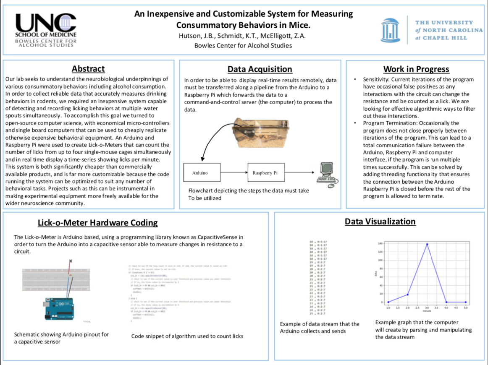

Poster presented at Synapse Neuroscience Symposium, Spring 2018
Effectively executed the design and implementation of device monitoring behavioral experimentation in mice.
Innovatively designed a capacitive circuit created with an Arduino, programmed in C++ that
functioned as a Lick-O-Meter. This device efficiently reported data to a computer running a Python
program utilizing the Matplotlib library to graph a real-time time series of the number of licks a
mouse made per minute.
Poker Calc
Calculator showing the win odds of an initial hand
Created a GUI application that allows a user to input a Texas Hold 'em hand in real time and produces the pot
odds, hand odds and the number of outs.
Developed the user interface using python PyQt5 library.
Garden Supply Website
Created a mock website for a garden supply store with HTML
Dog Adoption Website
Created a mock webstie for an animal shelter with HTML and CSS